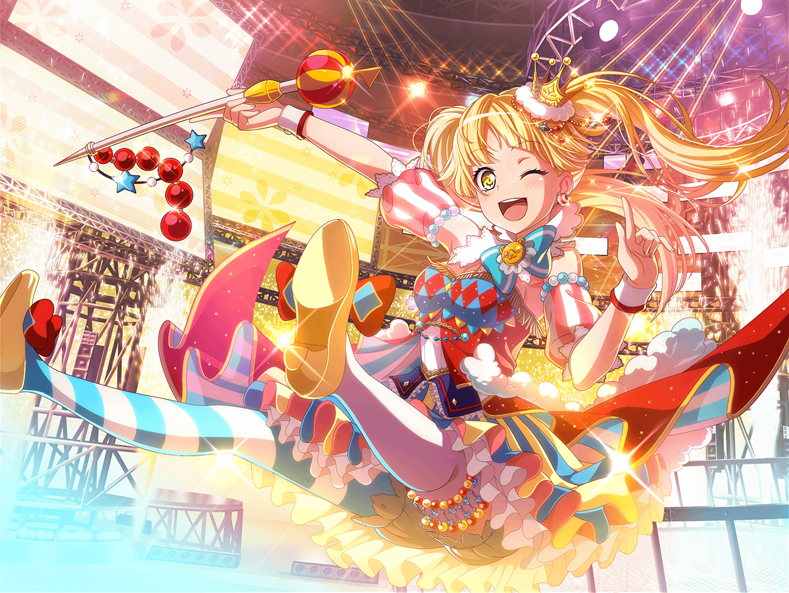

公園
こころ
あ！
{{userName}}じゃない！
こころ
とてもいいところで会えたわ！
{{userName}}に聞きたいことがあるの！
こころ
{{userName}}は、
あたしに似た人を見かけなかったかしら？
こころ
そう！
見た目があたしにそっくりな人よ
こころ
今、あたしは、あたしに似た人を
探している真っ最中なの！
こころ
あたしに似た人のことだから、
きっとこの公園にいると思ってここに来たのよ！
こころ
え？
あたしがあたしに似ている人を探してる理由？
こころ
実はこの前のライブの時、
美咲にとってもよく似た人が見に来ていたらしいの！
こころ
あたしは見なかったけど、はぐみ達は見たって言っていたわ！
こころ
その話を聞いたら、
あたしもあたしに似た人に会いたくなったの
こころ
{{userName}}は、
今まで自分に似た人に会ったことある？
こころ
確か、世界には自分に似た人が、何人かいるってウワサよ！
こころ
ただ、あたしはまだ一度も、
あたしに似た人に会ったことがないの！
こころ
だから、どうしても会ってみたくなったの！
こころ
会って何をするかは、もちろん決めてあるわ！
こころ
とってもステキなことを計画してるのよ
こころ
あたしは、あたしに似た人と一緒に、
ステージに立ってみたいと思っているの！
こころ
きっとあたしに似た人だって、あたしと一緒にステージに
立ちたいと思っているはずだわ！
こころ
それはそうよ！
あたしに似た人のことは、あたしが１番わかっているもの！
こころ
あ！
そうしたら他のバンドのメンバーに似てる人も
探してみようかしら！
こころ
美咲によく似た人はこの前見つけたから、
あとは、はぐみと薫と花音とミッシェルね！
こころ
みんなを集めてステージに立てたら、
とってもステキなライブになると思うわ！
こころ
早くみんな集まらないかしら！
とってもワクワクしてきちゃったわ！
こころ
それじゃあ、あたしはあたしに似た人を探すわ！
だから{{userName}}は、ミッシェルに似た人を
探してみてちょうだい！
こころ
そうよ！
ミッシェルに似た人だって、きっといるもの！
こころ
もし{{userName}}が、あたし達に似た人に会ったら、
あたしが会いたがっていたと伝えておいてくれるかしら？
こころ
あたしも{{userName}}によく似た人に会ったら、
{{userName}}が会いたがっていたと伝えておくわね！
こころ
あなたとあなたによく似た２人で、
あたし達とあたし達に似た人でやるライブに、
ぜひ来てほしいわ！
こころ
それじゃあよろしくね！